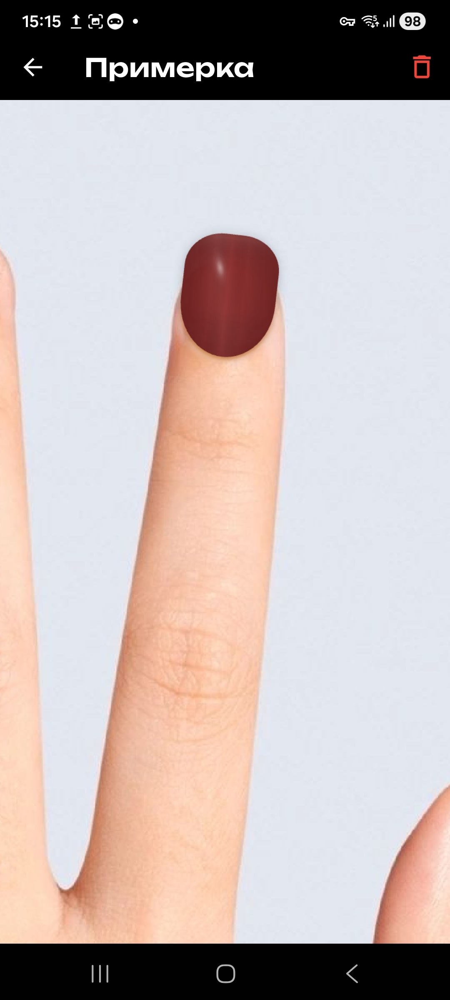
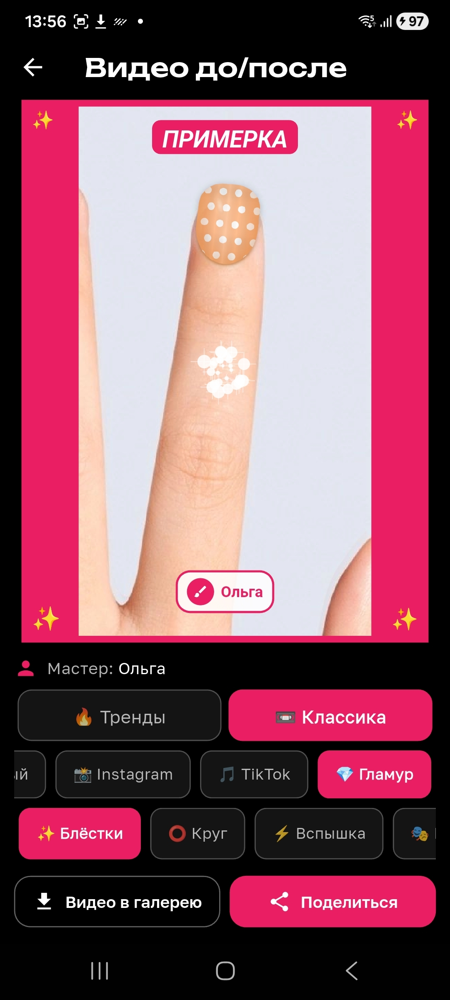
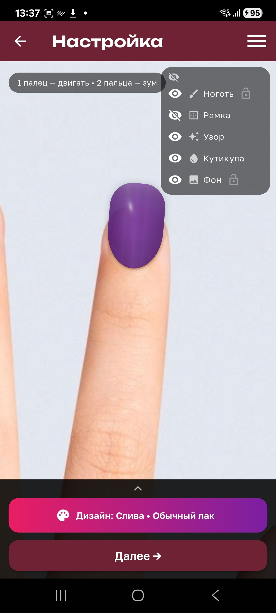
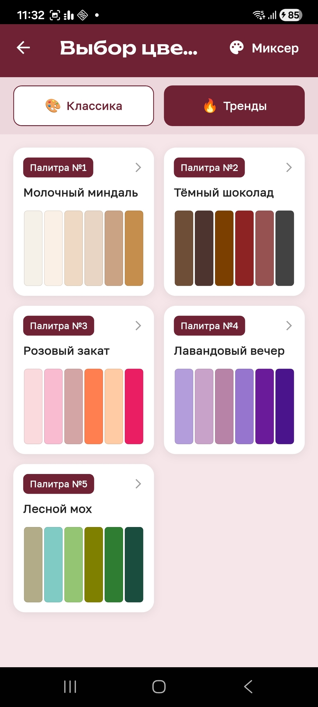

Твои Ноготочки
Примерка дизайнов и видео до/после для nail-мастеров
Забрать в RuStoreПримерка на живом пальце
Фото клиентки, сверху дизайн: цвет, материал, узор, форма — результат виден до начала работы
Видео за 5 секунд
Журнальная обложка «до/после» готова для Reels и Stories — клиентка видит магию, ты получаешь записи
База клиентов
Визиты, фото работ, цены, напоминания — всё в одном месте, всё на твоём устройстве
Слои как в фотошопе
Ноготь, рамка, узор, кутикула, фон — каждый слой живёт своей жизнью
Так приложение видит ноготь: скан, слои, палитра — и дизайн ложится до начала работы




Хроники создания мира — скоро